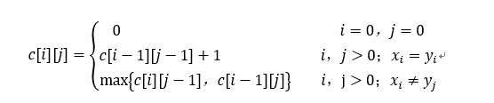

问题描述：
给定两个序列X={x1，x2，…，xm}和Y={y1，y2，…，yn}，找出X和Y的最长公共子序列。（给定两个序列X和Y，当另一序列Z既是X的子序列又是Y的子序列时，称Z是序列X和Y的公共子序列。）
细节须知（与之前随笔的对比）：
将由数组存储起来一并输出至文件修改为边运行边输出，增加了程序的鲁棒性。
算法原理：
a.最长公共子序列的结构
对X的所有子序列，检查它是否也是Y的子序列，从而确定它是否为X和Y的公共子序列。并且在检查过程中记录最长的公共子序列。X的所有子序列都检查过后即可求出X和Y的最长公共子序列。X的每个子序列相应于下标集{1,2，…，m}的一个子集。
b.子问题的递归结构
要找出X和Y的最长公共子序列，可按以下方式递归计算：当xm=yn时，找出Xm-1和Yn-1的最长公共子序列，然后在其尾部加上xm（=yn）即可得到X和Y的最长公共子序列。当xm≠yn时，必须解两个子问题，即找出Xm-1和Y的一个最长公共子序列及X和Yn-1的一个最长公共子序列。这两个公共子序列中较长者即为X和Y的最长公共子序列。
c.计算最优值
利用动态规划算法自底向上地计算最优值。
d.构造最长公共子序列
首先从b[m][n]开始，依其值在数组b中搜索。当b[i][j]=1时，表示Xi和Yj的最长公共子序列
1 #include<cstdio>
2 #include<cstring>
3 #include<stack>
4 #include<ctime>
5 #include<iostream>
6 #include<fstream>
7 #include<algorithm>
8 #include<windows.h>
9 using namespace std;
10 LARGE_INTEGER nFreq;//LARGE_INTEGER在64位系统中是LONGLONG，在32位系统中是高低两个32位的LONG，在windows.h中通过预编译宏作定义
11 LARGE_INTEGER nBeginTime;//记录开始时的计数器的值
12 LARGE_INTEGER nEndTime;//记录停止时的计数器的值
13 #define N 10000
14 //const int SIZE_CHAR = 10000; //生成32 + 1位C Style字符串
15 const char CCH[] = "_0123456789abcdefghijklmnopqrstuvwxyzABCDEFGHIJKLMNOPQRSTUVWXYZ_";
16 int dp[N][N];
17 char c;
18 int main(void)
19 {
20 //char a[N];
21 //char b[N];
22 //char a[SIZE_CHAR+2];
23 //char b[SIZE_CHAR+2];
24 ofstream fout;
25 int m = 0,i = 0;
26 int SIZE_CHAR;
27 cout<<"Please enter the number of times you want to run the program:"; //输入程序运行次数
28 cin>>m;
29 //int SIZE[m];
30 double cost;
31 //double runtime[m];
32 srand((unsigned)time(NULL));
33 fout.open("data.txt",ios::app);
34 if(!fout){
35 cerr<<"Can not open file 'data.txt' "<<endl;
36 return -1;
37 }
38 fout.setf(ios_base::fixed,ios_base::floatfield); //防止输出的数字使用科学计数法
39 for(i = 0; i < m; i++){
40 //SIZE_CHAR=10000+RAND_MAX*(rand()%300)+rand(); //RAND_MAX=32767,随机生成数据量
41 SIZE_CHAR = rand() % 10000;
42 fout<<SIZE_CHAR<<",";
43 // SIZE[i]=SIZE_CHAR; //限定数据规模为10000~9872867
44 char a[SIZE_CHAR + 1] = {'\0'};
45 char b[SIZE_CHAR + 1] = {'\0'};
46 cout<<"☆☆☆☆☆☆☆☆☆☆☆☆☆☆☆☆☆☆☆The "<<i+1<<"th test's string size is:"<<SIZE_CHAR<<"☆☆☆☆☆☆☆☆☆☆☆☆☆☆☆☆☆☆☆☆☆☆☆"<<endl;
47 for (int i = 0; i < SIZE_CHAR; ++i){
48 int x = rand() / (RAND_MAX / (sizeof(CCH) - 1));
49 a[i] = CCH[x];
50 }
51 cout<<"The first random sting is:" <<a <<endl;
52 for (int i = 0; i < SIZE_CHAR; ++i){
53 int x = rand() / (RAND_MAX / (sizeof(CCH) - 1));
54 b[i] = CCH[x];
55 }
56 cout<<"The second random string is:" <<b <<endl;
57 cout<<"The longest common subsequence is:";
58 QueryPerformanceFrequency(&nFreq);//获取系统时钟频率
59 QueryPerformanceCounter(&nBeginTime);//获取开始时刻计数值
60 int la=strlen(a);
61 int lb=strlen(b);
62 memset(dp,0,sizeof(dp));
63 for(int i=1; i<=la; i++){
64 for(int j=1; j<=lb; j++){
65 if(a[i-1]==b[j-1])
66 dp[i][j]=dp[i-1][j-1]+1;
67 else
68 dp[i][j]=max(dp[i-1][j],dp[i][j-1]);
69 }
70 }
71 int i=la,j=lb;
72 stack<char>s;
73 while(dp[i][j]){
74 if(dp[i][j]==dp[i-1][j]){//来自于左方向
75 i--;
76 }
77 else if(dp[i][j]==dp[i][j-1]){//来自于上方向
78 j--;
79 }
80 else if(dp[i][j]>dp[i-1][j-1]){//来自于左上方向
81 i--;
82 j--;
83 s.push(a[i]); //压栈以便倒序输出
84 }
85 }
86 while(!s.empty())
87 {
88 c=s.top();
89 printf("%c",c);
90 s.pop();
91 }
92 cout<<endl;
93 QueryPerformanceCounter(&nEndTime);//获取停止时刻计数值
94 cost=(double)(nEndTime.QuadPart - nBeginTime.QuadPart) / (double)nFreq.QuadPart;
95 fout<<cost<<endl;
96 //runtime[i]=cost;
97 cout<<"The running time is："<<cost<<" s"<<endl;
98 }
99 fout.close();
100 cout<<"Success!"<<endl;
101 return 0;
102 }程序设计思路：
设序列X={x1，x2，…，xm}和Y={y1，y2，…，yn}的最长公共子序列为Z={z1，z2，…，zk}，则
a.若xm=yn，则zk=xm=yn，且Zk-1是Xm-1和Yn-1的最长公共子序列。
b.若xm≠yn，且zk≠xm，则Z是Xm-1和Y的最长公共子序列。
c.若xm≠yn，且zk≠yn，则Z是X和Yn-1的最长公共子序列。
其中，Xm-1={x1，x2，…，xm-1}；Ym-1={y1，y2，…，yn-1}；Zk-1={z1，z2，…，zk-1}。
② 子问题的递归结构
首先建立子问题最优值的递归关系。用c[i][j]记录序列Xi和Yj的最长公共子序列的长度。其中，X={x1，x2，…，xm}；Y={y1，y2，…，yn}。当i=0或j=0时，空序列是Xi和Yj的最长公共子序列，故此时c[i][j]=0。在其他情况下，由最优子结构性质课件里递归关系如下：

③计算最优值
以序列X和Y作为输入。输出两个数组c和b。其中c[i][j]存储Xi和Yj的最长公共子序列的长度，b[i][j]记录c[i][j]的值是由哪一个子问题的解得到的，这在构造最长公共子序列时要用到。问题的最优值，即X和Y的最长公共子序列的长度记录与c[m][n]中。
④构造最长公共子序列
首先从b[m][n]开始，依其值在数组b中搜索。当b[i][j]=1时，表示Xi和Yj的最长公共子序列是由Xi-1和Yj-1的最长公共子序列在尾部加上xi所得到的子序列；当b[i][j]=2时，表示Xi和Yj的最长公共子序列与Xi-1和Yj的最长公共子序列相同；当b[i][j]=3时，表示Xi和Yj的最长公共子序列与Xi和Yj-1的最长公共子序列相同。
时间复杂性分析：
a.计算最优值
由于每个数组单元的计算耗费O（1）的时间，此部分算法耗时为O（mn）。
b.构造最长公共子序列
该算法每一次递归调用使i或j减1，因此算法的计算时间为O（m+n）。
生成的数据可导入EXCEL中进行数据分析生成分析图表。